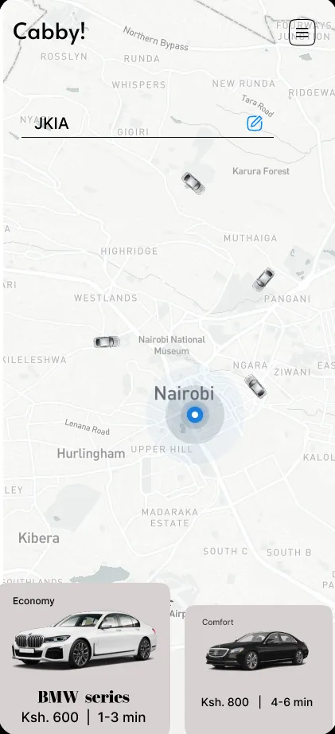
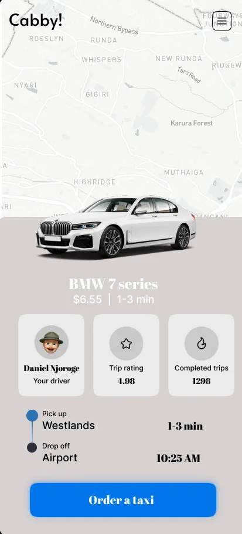
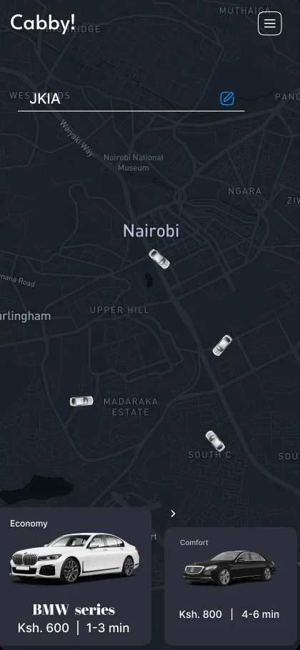
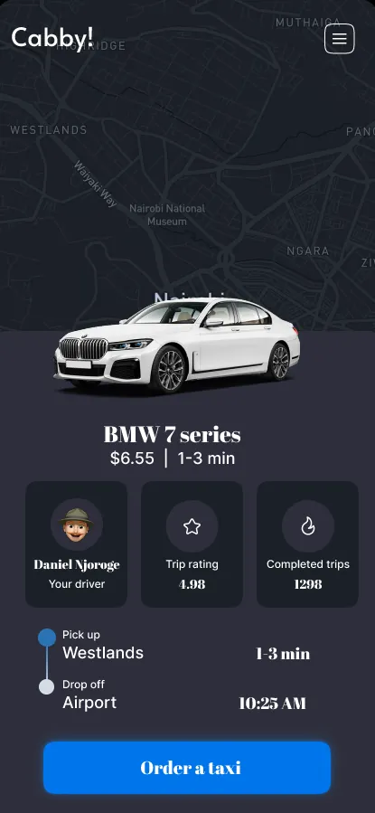

Cabby

Book a taxi from your location to your destination with ease. Cabby is committed to saving your money while providing affordable, reliable, and enjoyable rides.
Travelling and affordability at one go.
— Jamie Rednapp
The problem
Problem statement
Many urban commuters face affordability challenges with existing taxi services. There's a need for a cost-effective taxi app that ensures accessibility without compromising quality or safety.
The Kenyan market
Uber · Bolt · FarasBackground research
I analysed the competitive landscape of transportation apps in Kenya, focusing on Uber, Bolt and Faras. The research examined strategies, market penetration, user experiences and service offerings. Key metrics included pricing, availability, reliability and user satisfaction.
User interviews
I interviewed frequent ride-hailing users about their daily commutes, cost concerns and safety expectations. The interviews revealed common themes around affordability, reliability, and the desire for more cost-effective options like carpooling. These findings directly informed the app's feature priorities.
Findings
Why Faras grew
Despite entering the market more recently, Faras emerged as a formidable competitor, overtaking established players like Uber and Bolt. The key to its rapid ascent: consistent offers aimed at customer satisfaction through strategic promotions and incentives, attracting and retaining a growing user base.
Carpooling
Feature priority
Building on Faras' success, we proposed a carpooling section within the app. It enhances the experience while promoting cost-saving, comfort and safety. By helping riders with common destinations share a ride, the app also addresses traffic congestion and environmental sustainability.




Usability testing
User testing
I ran usability sessions on early prototypes of the carpooling feature: booking a shared ride, viewing available carpool options, and understanding the cost savings.
Testing revealed navigation challenges, unclear pricing information, and concerns about safety features. I refined the interface to improve clarity, simplify the booking flow, and address safety before finalising the design.

Inspired by Faras' success, we designed a business model that shifts pricing so drivers get 100% of the fare.
By addressing customer needs for cost-saving, comfort, and safety, we aim to redefine transportation apps in Kenya. Our commitment to user feedback ensures we deliver a solution that improves urban mobility.
The idea was not to change the way the app works or looks, but to make the business more affordable for the drivers and users.